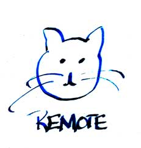

Girl Develop It is here to provide affordable and accessible programs to women to learn software through mentorship and hands-on instruction.
Some Rules:
Version control allows you and your team to do two very powerful things:
You can create anything* with other people and be able to easily merge changes with each other
* Okay, almost anything. Git works well for projects that are primarily:
Git gives you the ability to "go back in time"
There are basically two types:
string to keep track of
when changes are made and by whomCreating a local repository starts with having a local working directory.
Before you can push changes, you need to create the remote repository
You usually create the remote on the GitHub website (or whereever you store your remote repositories.)
By convention, and this almost never changes, the remote repository is known to the local repository as "origin".
It doesn't have to be, but it's the default most tools and other users assume.
… allows us to work on different parts of the project at the same time without interfering with other work.
… is also useful for trying experiments without breaking existing code
master is the default branchMost systems come with some version of Git installed, but it's usually best to work with the most recent (or close to recent) version.
Git itself is primarily a command line tool
There are also two good GUI tools that you can do most of what you'll learn today.
We'll be working with SourceTree today
An alternative to most of the command line git tools
Download from:
Another alternative to most of the command line git tools
Download from:
(We won't be covering this tool in class.)
Click on the following link for the next set of slides: